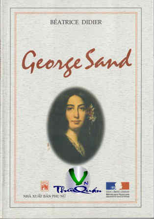

« Back
George Sand
By Béatrice Didier

Mở Đầu
1- Ra Đời
2. Nổi Loạn
3 – Tôi Và Những Người Khác
4 Tính Đa Dạng Của Thế Giới
5 - Giới Nghệ Sĩ
6 - Tất Cả Đều Là Lịch Sử
7 - Sức Hấp Dẫn Không Ngừng Của Vạn Vật
Niên Biểu
Hình Ảnh